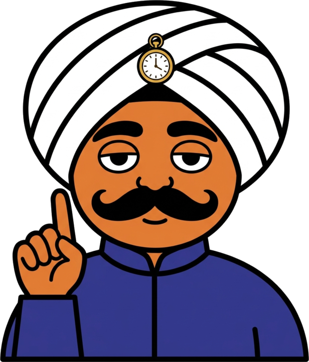
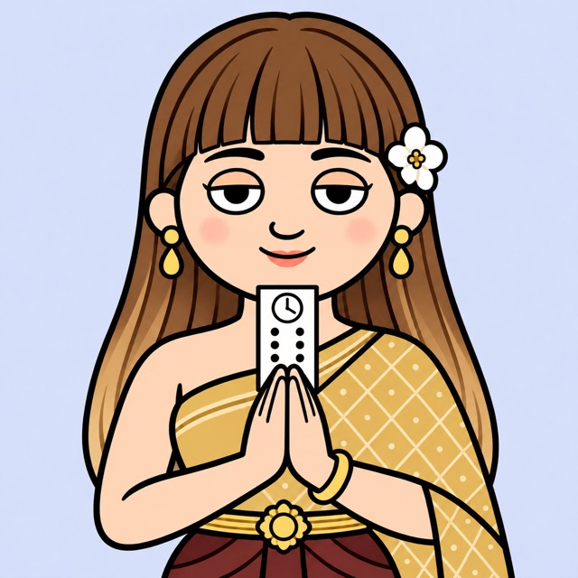

リマインド人
Slackで受けた依頼を、メンション1つでタスクに。AIがタスク名と期限を読み取り、期限の前後に声をかけて、「あとでやります」を「やりました」まで見届けます。いつものSlackのまま使えます。
- 頼む人がすることは、メンションをつけるだけ
- 1件の依頼の経過が、ひとつのスレッドで追える
Slackの中に、AIの同僚を1人ずつ迎えるシリーズです。新しいIDは増やさず、いつものSlackを入口に、取りこぼしやすい仕事をそれぞれの同僚が引き受けます。


リマインド人と勤タイ人は、1人から迎えられます。ニッポー人は準備中です。
名前は、受け持つ仕事にちなんだ言葉遊びです。
Slackで受けた依頼を、メンション1つでタスクに。AIがタスク名と期限を読み取り、期限の前後に声をかけて、「あとでやります」を「やりました」まで見届けます。いつものSlackのまま使えます。
打刻は、Slackの勤怠チャンネルに「出勤」と書くだけ。退勤を押し忘れていれば声をかけ、在席一覧・会議室予約・来客登録まで1つの画面にまとめます。記録は貴社のGoogleスプレッドシートに残ります。
日報を、Slackの中で書いて・読んで・返せるようにする同僚を準備しています。勤タイ人で退勤を打つと、その場でDMが届いて日報が始まる形を予定しています。